金融與財務
強化投資、財務管理與金融市場能力。
金融市場
投資
財務管理
- 投資學
- 財務經濟學
- 財務管理
- 股票投資分析與實務
- 金融證照研習
- 金融機構與市場
- 財務報表分析
- 期貨與選擇權
- 新金融商品
- 理財分析與實務
- 基礎金融商品定價
- 債券投資分析與實務
- 量化交易
- 選擇權定價概論
- 金融理財與生活(A)(B)
從基礎理論、核心分析能力，到四大專業分流與職涯發展，協助學生用更清楚的路徑規劃四年學習。
先建立共同能力，再依興趣選擇專業方向。
強化投資、財務管理與金融市場能力。
培養資料處理、程式與計量分析力。
連結政策、財政、國際與永續議題。
理解產業結構、勞動市場與區域經濟。
修讀該領域 18 學分，完成一項學習成果，取得財務金融學程認證。
修讀該領域 18 學分，完成一項學習成果，取得資料分析學程認證。
經濟、財經、商學、統計、資料科學與相關研究所。
金融業、一般商業、公部門、研究單位與學術單位。

此頁為視覺與資訊架構示意，課程名稱依原課程地圖整理，正式上線前可再對照最新必選修科目表與學分規範。